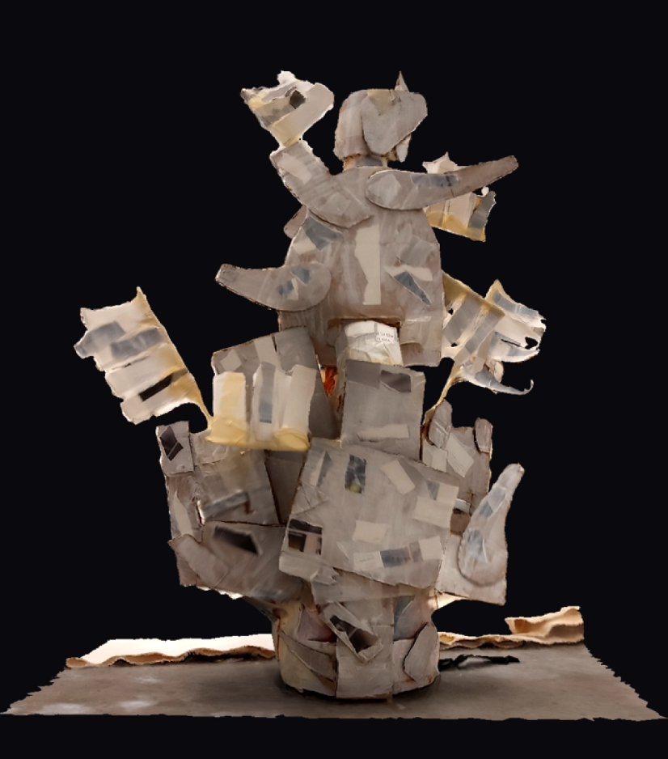
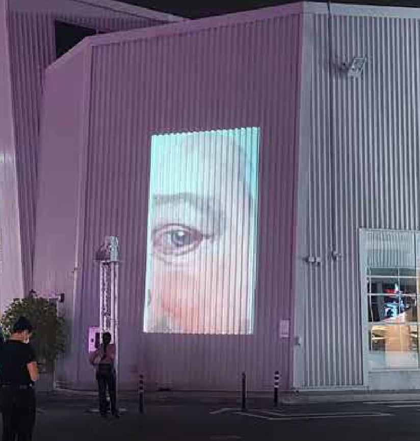
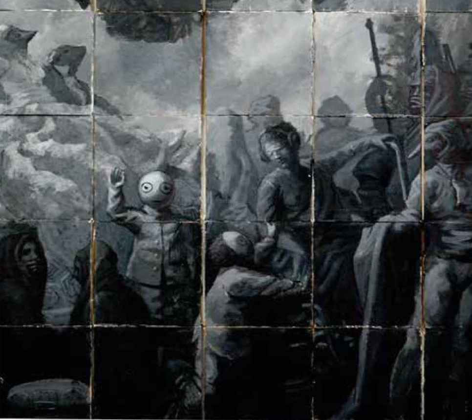

Project Dossiers
ID Entity

This project, developed during the residency, consists of a series of digital collages, assemblages and paintings that explore the construction of a new identity as well as an exploration, using the mask as a costume/skin made of make-believe attempts, the makeshift costume of the mask as a performance, the mise en scene while looking for fragmentation and recontextualization uisng techniques as painting, AR and VR to explore the act of imagemaking from that point of view.
A-B=C

Videoinstallation comissioned by Alserkal Avenue during the 2022 Art Week : "In this work, the eye retains the projected image, even if objects placed before it ‘break’ its integrity.The will to persevere, the drive to remain, to resist ephemerality—we share this with the image’s tumultuous self.” (Kevin Jones, curator)
Room Creatures
Videoinstallation an evolution of the videoporjection, it is a series of videoprojections, developed during the RCA CASS, it expands about different topics such as idenity, existence and permanence, using different referents from history as well as reflecting on transient fragility of nature.
Draft for an Opera

A masked character travels in a alien enviroment , exploring different sensations and trying to forge new links and made sense of the new experience exploring an imaginary city where the city becomes the world. A mix of fantastic nostalgia of, allegedly, a world without humans. The feeling of catastrophe, chaos and the visual storytelling of traditional illustrations all made an appearance subtly disguised, letting spill some historical references of Peru in particular and LatAm in general.
The Journeyman 1 and 2

A masked character travels in a alien enviroment , exploring different sensations and trying to forge new links and made sense of the new experience exploring an imaginary city where the city becomes the world. A mix of fantastic nostalgia of, allegedly, a world without humans. The feeling of catastrophe, chaos and the visual storytelling of traditional illustrations all made an appearance subtly disguised, letting spill some historical references of Peru in particular and LatAm in general.
Zoomorphic anthropomorphic

A proposal for urban interventions. Traditional and digital interpretations of natural forms, exploring the intersection between organic structures and geometric patterns.
Poetic Web

Explorations, via basic computer-generated artworks, of basic abstract form and its combinations of translated numbers and visual aesthetics and digital interpretations of natural forms, exploring the intersection between organic structures and geometric patterns.
Retablo

A series of small “mise en scene” exploring images of the subcon-scious from the construction of the identity to the hidden realities of the mind through surrealist scenes. The figures were de-stroyed after the photography was taking, being the record, the photo used in the collages and assem-blages the ony thing that remains of the figurines, exploring at the same time the nature of the image as presence and vestige as well as creation and ideation.